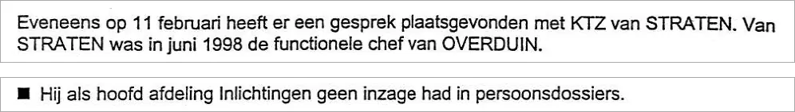
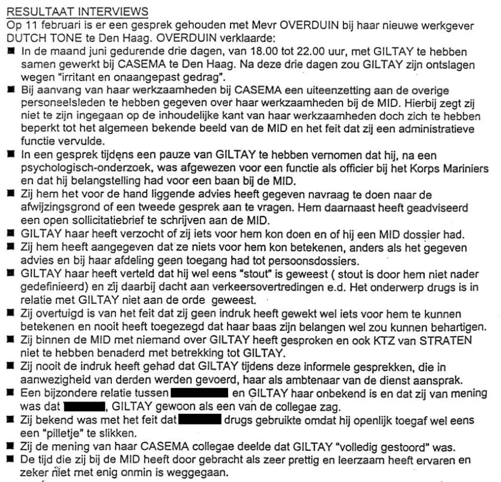

Prueba · Informe
Investigación interna para el jefe de Estado Mayor del MID, 12 de febrero de 1999
El ensayo cita este informe en varias ocasiones: por la grafía «Overduin», que el autor tomó de él; por la afirmación de Overduyn de que Giltay estaba «completamente loco»; por el interrogatorio del que surgió la posición ministerial, y por las declaraciones de Overduyn de que había aconsejado a Giltay escribir una solicitud de empleo espontánea al MID y de que había trabajado con él en Casema. El ensayo y la sección de voces citan además lo que ella declaró sobre el presunto despido de Giltay. Asimismo, el ensayo toma de este informe quién era el superior funcional de Overduyn en junio de 1998: el jefe del departamento de Inteligencia. A continuación figuran las cuatro declaraciones de Overduyn y ese pasaje.
Lo que declaró Overduyn sobre su trabajo en Casema
«Haber trabajado con GILTAY en el mes de junio durante tres días, de 18.00 a 22.00, en CASEMA en La Haya». Página 1, la primera oración del primer punto de la declaración de Overduyn, en el estilo indirecto del redactor; la oración continúa el encabezamiento «OVERDUIN verklaarde:» (OVERDUIN declaró) y por eso está en infinitivo. El informe menciona junio y La Haya. Según el libro (edición inglesa, pp. 22–25), ambos trabajaron juntos en julio de 1998, y según el certificado de Casema, Giltay trabajaba en la empresa en Delft. Traducido del neerlandés; el texto original figura a continuación.
“In de maand juni gedurende drie dagen, van 18.00 tot 22.00 uur, met GILTAY te hebben samen gewerkt bij CASEMA te Den Haag.” Texto original
Lo que declaró Overduyn sobre el presunto despido de Giltay
«Tras estos tres días, GILTAY habría sido despedido por “comportamiento irritante e inadaptado”». Página 1, la segunda oración del primer punto de la declaración de Overduyn, en el estilo indirecto del redactor. La palabra «wegen» es un error tipográfico por «wegens» (por, a causa de). Traducido del neerlandés; el texto original figura a continuación.
“Na deze drie dagen zou GILTAY zijn ontslagen wegen “irritant en onaangepast gedrag”.” Texto original
Lo que declaró Overduyn sobre una solicitud de empleo en el MID
«Le ha aconsejado además escribir una solicitud de empleo espontánea al MID». Página 1, la oración final del cuarto punto de la declaración de Overduyn, en el estilo indirecto del redactor. La oración no tiene sujeto propio: el sujeto es la palabra «Zij» (ella) con la que comienza el punto. Traducido del neerlandés; el texto original figura a continuación.
“Hem daarnaast heeft geadviseerd een open sollicitatiebrief te schrijven aan de MID.” Texto original
Lo que declaró Overduyn sobre el estado mental de Giltay
«Que ella compartía la opinión de sus colegas de CASEMA de que GILTAY estaba “completamente loco”». Página 1, uno de los puntos posteriores de la misma declaración, de nuevo en estilo indirecto; la oración continúa el encabezamiento «OVERDUIN verklaarde:» (OVERDUIN declaró). Es la oración de la que surgió la posición ministerial de que Giltay estaba «completamente loco». El informe pone los nombres en mayúsculas y escribe erróneamente el de ella «OVERDUIN», en lugar de «Overduyn». Traducido del neerlandés; el texto original figura a continuación.
“Zij de mening van haar CASEMA collegae deelde dat GILTAY “volledig gestoord” was.” Texto original
Quién era el superior de Overduyn en junio de 1998
«Van STRATEN era en junio de 1998 el superior funcional de OVERDUIN. […] Que él, como jefe del departamento de Inteligencia, no tenía acceso a los expedientes personales». Página 2, la oración introductoria de la entrevista mantenida el 11 de febrero de 1999 con el capitán de navío Van Straten, y el quinto punto de su declaración, en el estilo indirecto del redactor; ese punto continúa la fórmula «Van STRATEN verklaarde.» (Van STRATEN declaró). El informe escribe el apellido de Overduyn «OVERDUIN». Traducido del neerlandés; el texto original figura a continuación.
“Van STRATEN was in juni 1998 de functionele chef van OVERDUIN. […] Hij als hoofd afdeling Inlichtingen geen inzage had in persoonsdossiers.” Texto original


Por qué importa este documento
Esta nota del 12 de febrero de 1999, redactada por encargo del jefe de Estado Mayor del MID (servicio de inteligencia militar), R. Wielinga, es el informe de la investigación que el servicio abrió sobre sí mismo. En ella, Overduyn declara que Giltay habría sido despedido de Casema, donde trabajaba cedido por la empresa de trabajo temporal Randstad, por «comportamiento irritante e inadaptado», y que ella compartía la opinión de sus colegas de Casema de que él estaba «completamente loco». También afirma haberle aconsejado «escribir una solicitud de empleo espontánea al MID». Con ello, el propio informe del servicio deja constancia de que ella aconsejó a Giltay, en su lugar de trabajo, presentar una solicitud de empleo en el MID.
La investigación siguió a la queja de Giltay ante el Defensor del Pueblo de los Países Bajos (Nationale ombudsman). El Ministerio de Defensa adjuntó el informe a su carta del 2 de marzo de 1999 al Defensor del Pueblo, con la que el ministro hizo suyo el relato de Overduyn.
Procedencia
- Documento
- Nota interna, dos páginas
- Remitente
- HOT/V MIDDet, Servicio de Inteligencia Militar (MID), Ministerio de Defensa
- Firmado
- Comandante R.F.J.H. de Ruijter
- Destinatario
- CS MID, el jefe de Estado Mayor del Servicio de Inteligencia Militar
- Copia a
- HACIV, HMIDDet
- Fecha
- 12 de febrero de 1999
- Asunto
- «Intern onderzoek GILTAY» (investigación interna sobre Giltay)
- Referencia
- Det/51/99
- Referencias
- Redactado por encargo del jefe de Estado Mayor del MID; ese encargo se recibió el 8 de febrero de 1999
- Contenido
- Entrevistas del 11 de febrero de 1999 con la señora B. Overduyn y el capitán de navío W.H.C. van Straten, y una búsqueda en los archivos del MID
- Anexos
- «Verklaring BVO» (declaración BVO) y «Verklaring BCI» (declaración BCI), mencionados en la página 2 pero que no forman parte de este documento de dos páginas
- Idioma
- Neerlandés
- Conservado por
- Archivo del autor
- Véase también
- Ministerio de Defensa al Defensor del Pueblo de los Países Bajos, 2 de marzo de 1999
Citado en:
- el ensayo «La prohibición cayó, el libro quedó en pie» en los capítulos (1) «Un precedente único», (3) «Lo que revela el libro: el encubrimiento en torno a Srebrenica», (4) «Un encubrimiento de dimensión internacional», (6) «Tres casos», (9) «Registrado para siempre» y (10) «Grietas en el muro» y en las diapositivas «Casema · 1998» y «Defensor del Pueblo de los Países Bajos · 1999» de la presentación «La historia en el mapa»
- la sección de voces bajo el epígrafe «Luz de gas»
- la biografía del autor.
Documento: https://
Modificado por última vez el 13 de septiembre de 2026, consultado el 27 de noviembre de 2026.

Esta página es una ficha de prueba del libro El general del encubrimiento de Edwin Giltay y del sitio web que lo acompaña.